| L’île de Mayotte, l’île à l’immense lagon, proche de la côte sud-Est de l’Afrique, est une merveille de la nature, unique, hors du commun et hors des sentiers touristiques, essentiellement à cause du coût du transport aérien plutôt élevé entre l’Europe et l’île. Une île presque vierge, encore très préservée.L’île de Mayotte est française, située plus précisément dans la partie ouest de l'Océan Indien entre le continent africain et Madagascar, à l'entrée nord du Canal du Mozambique. Elle est distante de 8 000 km de la métropole et de 1 500 km de l'île de la Réunion. |
 |
La faune marinePouvant atteindre des profondeurs de 70 m, ceinturé d'une barrière de récifs de 195 km de long, le lagon de Mayotte abrite beaucoup d'espèces marines. Sa différence, par rapport aux autres lagons, est que par endroits, la barrière de corail est double. La faune marine de Mayotte comprend 770 genres de poissons de mer, appartenant à 356 espèces différentes et à 114 familles. Ce n'est que depuis quelques années qu'une sensibilisation à la protection des richesses naturelles de Mayotte a été faite auprès de la population. Un parc marin a été créé en 2010 qui assure, entre autres choses, le suivi des écosystèmes et met en valeur le patrimoine naturel de la mangrove et de la mer en le protégeant.Le long des côtes, le récif frangeant abrite une multitude poissons aux couleurs chatoyantes et de coraux. C'est ainsi que vous pourrez facilement, en partant de la plage, aller admirer poissons chirurgiens, balistes, poissons clowns, coffres, mérous de belle taille, capitaines et autres espèces qui passeront à côté de vous sans peur. Il ne faut pas non plus oublier les étoiles de mer aux couleurs diverses, les coquillages et bien sûr l'hippocampe, symbole de Mayotte (très difficile à voir). Attention, beaucoup espèces sont protégées et il est interdit de les ramasser. Vous croiserez aussi une autre habitante qui se promène dans les eaux turquoise du lagon, c'est la tortue. Elle vient chaque année pondre sur les plages de Moya ou de Sazyley. A Mayotte, vous êtes sûr de nager avec des tortues à Moya, à N'Gouja ou sur d'autre plage qu'elles affectionnent. Si vous allez en bateau dans le lagon, vous verrez certainement des dauphins. On en recense 17 espèces à Mayotte. Ils aiment jouer à proximité des embarcations. Entre juillet et octobre, les baleines à bosses viennent chaque année mettre bas et élever leur petit dans les eaux calmes qui bordent Mayotte. Elles restent plutôt à l'extérieur du lagon, mais il arrive qu'elles pénètrent par les passes et il est fort possible d'en croiser à l'intérieur de la barrière. Si en plus, vous avez la chance d'entendre le mâle chanter, vous garderez un souvenir inoubliable de vos vacances à Mayotte. La pêche au harpon est interdite dans le lagon. Faune terrestreSi la faune de Mayotte est importante sous l'eau, elle est aussi très présente sur terre. Un des premiers animaux que vous ne manquerez pas d'apercevoir est le maki. Ce sont des lémuriens qui vivent en bande. Ils se nourrissent exclusivement de fruits mûrs. Souvent la mère ouvre le cortège et le père ferme la marche (Mayotte est un régime matriarcal…). Il n'est pas rare de les voir même à Mamoudzou faire les équilibristes sur les fils de téléphone. Dès qu'un régime de bananes est sur le point d'être coupé ou que les manguiers regorgent de fruits jaunes, ils arrivent.Les roussettes, chauves-souris frugivores, déploient leurs ailes dès que la luminosité baisse et elles adorent venir boire dans la fleur du bananier. Il y en a beaucoup sur tout l'île, vous ne pourrez pas les manquer. Un autre animal caractéristique de Mayotte est le zébu. Vous en croiserez souvent au milieu de la route. Côté reptile, le gecko, de la catégorie des lézards, appelé "margouillat", vert avec des zébrures rouges, chasse de jour comme de nuit, principalement des insectes. Il en existe plusieurs espèces sur l’île avec des couleurs variées. Le caméléon fait aussi partie de la faune terrestre de Mayotte ainsi que d'autres lézards. Les mangroves abritent de nombreux oiseaux : paille en queue, martins pêcheurs, hérons ou sternes volent majestueusement au dessus du lagon. Il n'existe pas de serpents dans la faune de Mayotte sauf des couleuvres. Le seul animal auquel il faut vraiment faire attention, avec les moustiques, est la scolopendre. Elle ressemble à un mille pattes très poilu et sa piqûre est très douloureuse. |
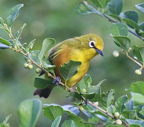 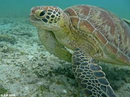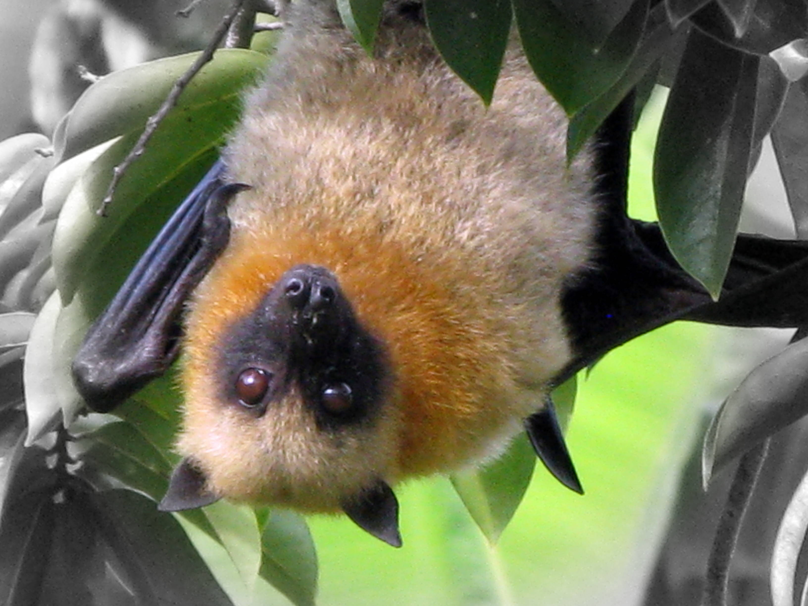 |
La mangrove de l'île et les paysages |
|
|---|---|
| Mayotte est une ile située dans l'archipel des Comores, entre Madagascar et l'Afrique. Française depuis 1841, elle doit devenir le 101ème département français en 2011, à la suite de: Martinique, Guadeloupe, Réunion, Guyane et St Pierre et Miquelon.
L'ile est peuplée depuis très longtemps, notamment du fait de sa proximité avec l'Afrique, Madagascar et tous les pays de l'Océan Indien, Inde notamment. Elle bénéficie de l'un des lagons les plus vastes du monde et des mieux préservés: 1100km2 ; 160km de long pour la barrière de corail. L'un des plus beaux du point de vue de la faune: poissons, tropicaux, requins, baleines, tortues; et par dessus tout une collection de coraux de toute beauté. |
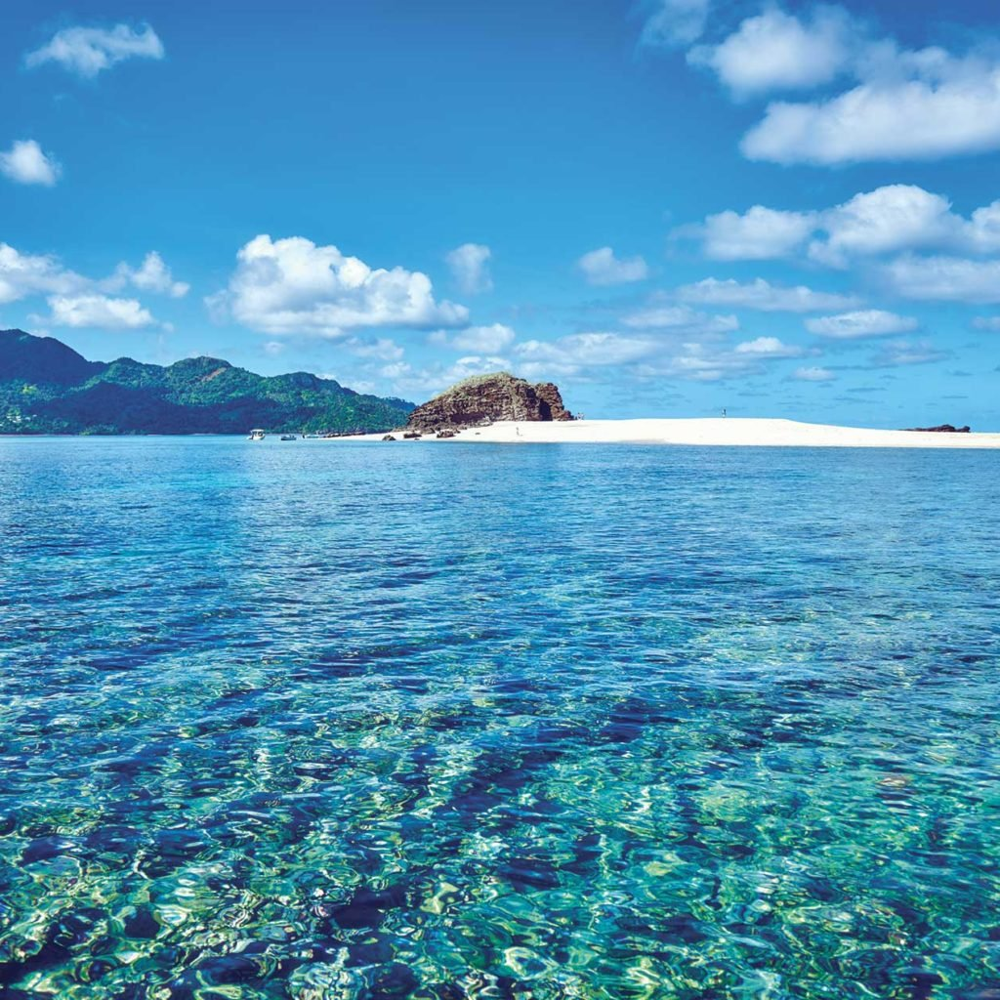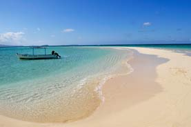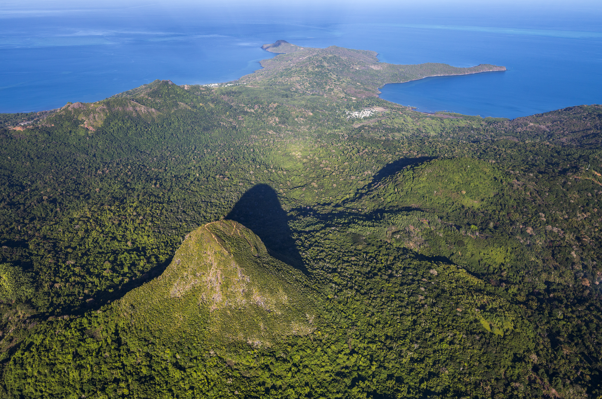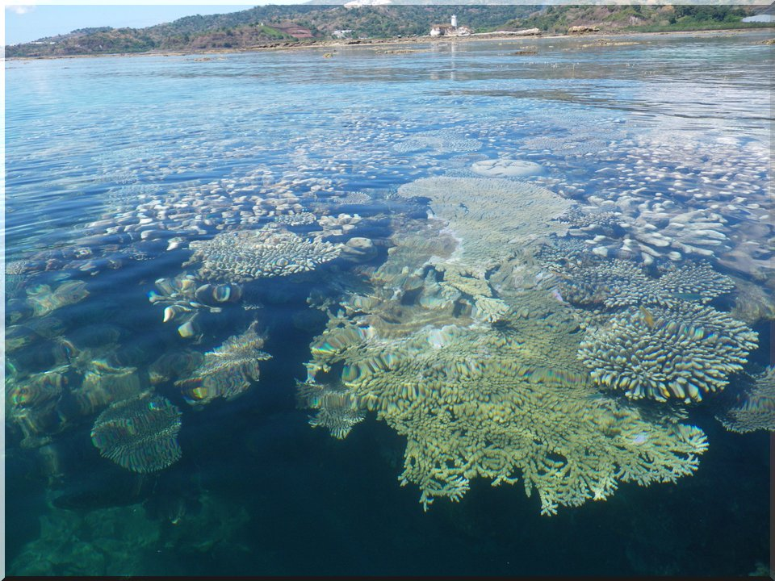 |
| Les gens et la richesse de la gastronomie tropicale | |
|---|---|
LE MATSIDZALe matsidza est un riz cuit dans l’eau de coco. Il sert de base sur les grandes tablées, lorsqu’il y a du monde à nourrir. Pour les grandes cérémonies, on le mélange à du lait caillé.LES BATA-BATALes bata-bata sont une base qui va avec tout. Il s’agit de bananes vertes, de manioc ou du fruit à pain, frits dans l’huile. Ils sont parfois simplement bouillis dans l’eau. Seuls, ils sont servis avec du piment – pili pili-, et en accompagnement, on les sert avec de la viande ou du poisson.LE KAKAMOKULe kakamoukou ou kakamoku est une soupe de poisson mijoté avec de l’ail, du piment, des oignons, servie avec du citron. On l’accompagne le plus souvent de bata-bata.LE MATABAServi avec du riz, le mataba pourrait ressembler à des épinards à la crème : les brèdes de manioc, soit les feuilles sont pilées avec de l’oignon et de l’ail, puis bouillies avec du lait de coco, jusqu’à ce que celui-ci réduise au maximum, et que la préparation ne soit plus liquide.LES BROCHETTES ET MABAWASLes grillades de poisson, les ailes de poulet grillées – mabawa- les brochettes de viande de poulet, de zébu, de bœuf ou de chèvre sont de toutes les fêtes, et de tous les voulés, ces barbecues très conviviaux sur la plage. Les « mamans brochettis » assurent un service presque à plein temps, où l’on peut déguster de délicieuses brochettes en discutant de la pluie et du beau temps, pour presque rien. |
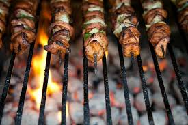  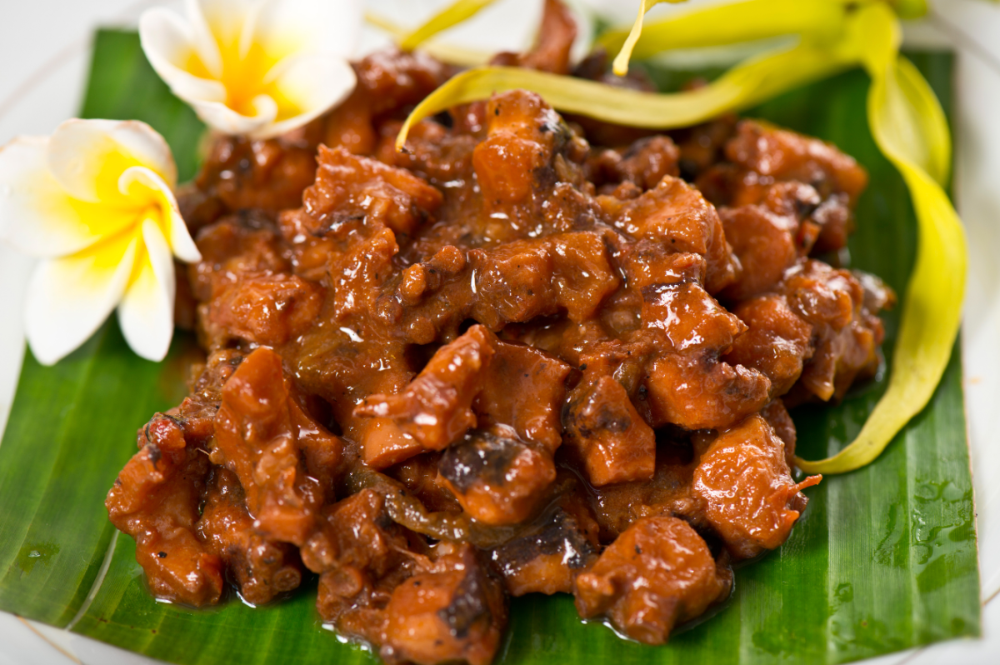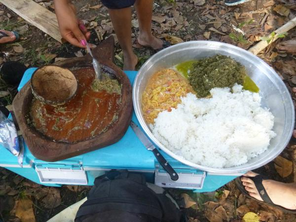 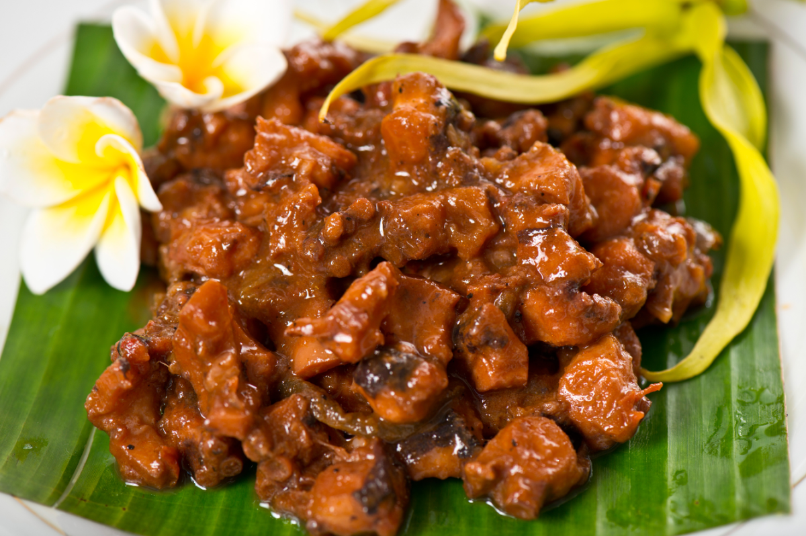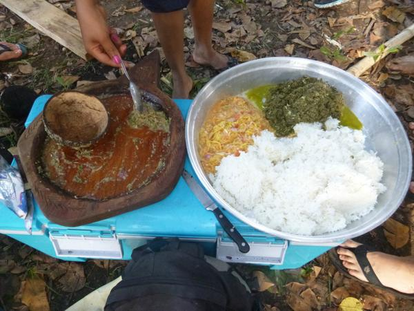 |